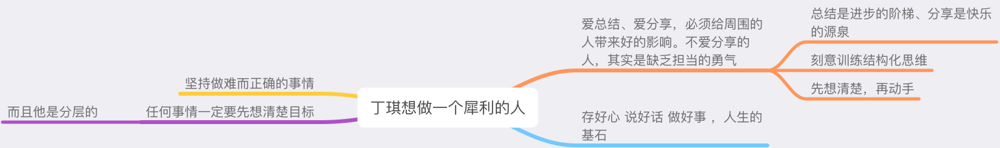

概述
- 本篇总结人生经验和最佳实践
一 个人修养
- 结交“两个朋友”一个是运动场，一个是图书馆。到运动场锻炼身体，强健体魄；到图书馆博览群书，不断地“充电”、“蓄电”、“放电”。
- 培养“两种功夫”一个是本分，一个是本事。做人靠本分，做事靠本事，靠“两本”起家靠得住。
- 吃得苦中苦，方为人上人。
- 不好色、孝顺父母、不浪费、少吃
- 不生气、不累着自己、要活得久
- 戒为良药，不泄为大补
- 节劳、节欲、节饮食; 早睡早起;
二 待人接物
- 与人聊天时多说你，少说我。多关注别人、把人聊高兴、跟别人聊一路走来、好汉要提当年勇.
- 别人夸你时，不要说“哪里、哪里”，而要大方的说“谢谢”， 同时回一句“你真有眼光”
- 去某个远方的城市玩，回来一定要带礼物回来。
- 说话必须慎重多听少说少发表意见, 所有人都是揣着明白装糊涂.
-
- 尤其涉及利益分配的事情，主上若没表态、自己万不可表态.
-
- 替主子办事，千万别把主子给抖出去. 黑锅要自己背.
-
- 身居高位犹如身在悬崖，稍有不慎便会粉身碎骨。自古以来哪对君臣不演戏？所以上位者一定是注重演戏的的，自己做事千万别太实在.
-
- 自古以来哪对君臣不演戏？
-
-
- 比如战国末期秦始皇派秦将王翦消灭楚国，当时王翦要了全国的兵力统治权之后，在战争过程中不断问秦始皇要豪宅、田地、财宝，这是自污行为。王翦为何不向秦始皇明说？秦始皇把这么重要的任务都交给你了、全国的军队都交给你管了，肯定是信任你，为什么不明说自己的忠心呢？ 王翦采取了演戏策略.
-
-
-
- 比如汉朝开国后，萧何做为第一功臣，面对主上的可能的猜疑， 也是纵容手下贪污田地、钱财。这么做是自污、目的是让皇帝（刘邦）放心，我萧何没有大野心 不会威胁到你的皇权，只想要富贵。他和刘邦一路并肩走来，艰苦奋斗数十年，为何不明说自己的忠心？ 萧何采取了演戏策略.
-
-
-
- 其实真正那些做出伟大事业的君臣、创业兄弟、关系好的朋友、关系极好白头到老的夫妻、到最后行为上都是演戏，内心是真正为对方好 为共同目标努力、但行为上一定是演戏，通过行为互相彼此了解对方心意.
-
-
-
- 真正关系好到极致, 做出来的行为就类似演戏, 比如水浒传中武大郎在下雪天卖脆饼, 武松要和他一起回家. 武大郎让武松独自回家, 说: 你是官家人和我一起走不好看.
-
-
- 你想要路路通、遇事不难, 那你一定要注意做到: 你什么都明白, 但是你什么都说不明白. 你什么都清楚，但是你又要表现出来什么都不清楚. 古往今来遭遇杀身之祸的，哪一个不是按圣贤的话去做的.
- 跟师傅学习，手脚要勤快、嘴巴要甜.
- 表彰大会上，你受到表扬。回答一定要说这是领导指挥的好，加上各个部门共同协作的功劳。
三 人性
- 不要在众人面前，揭别人短。
- 销售进公司推销不要和前台保安说你是搞销售的，你说了人家就只能把你拦下。去KTV唱歌，不要去问前台能不能带零食和酒进去，想带就带，没人来查你包，你要是说了人家就只能说“不能带”。
- 多麻烦麻烦你的客户做一些力所能及的小事，背后原理是人们可能会忘记那个翻山越岭来看望自己的那个他，但是一定不会忘记自己翻山越岭去看的那个他。
- 只要是个人，就一定有弱点.
- 不要相信人，一定要相信人性。
- 天下熙熙皆为利来；
- 人在拼尽全力、历经千辛万苦、千难万难、取得成就后，一定是想保住地位、保住既得利益，再去干一些社会要求他做的事情。
- 富在深山有远亲，穷在闹市无人问。
- 所有人都想要： 以最少的时间、金钱，换取最多的时间、金钱。 你让他过上好日子，他就支持你拥护你；你让他过不上好日子，他就反对你。
- 一定要先处理心情，再处理事情.
一个小例子
- 2026年1月, 我正在为快手弹指宇宙上班, 我们游戏只剩下最后一波. 这个时候有架构治理部（和我们游戏事业部不是同一个部门）来找我们治理一些域名，包括残留域名、容灾等.
-
- 这个时候你就会想到底是全心全意为公司好，还是先保住自己的职位（同时这些事情慢慢搞）.
-
- 所有人都是先保住自己的职位, 这些为公司好的事情可以慢慢做. 因为第一 这些事情你做了很可能大老板看不到，也很可能不是大老板目前头疼的问题. 第二你一个劲的做这些边角料的事情，它很可能需要让很多研发同事去投入时间精力，最后成果不一定有那么大（或者说大家得不到很多收入）。
-
- 连一家公司上班都这样，何况社会上形形色色各种各样的人、官员.
四 各种策略
- 走一步想三步.
- 汉景帝给周亚夫升任丞相，是明升暗降。
- 远交近攻
- 存人失地、人地皆存；存地失人、人地皆失.
- 平时就要铺垫关系，财散人聚，关键时刻全靠关系.
- 多问问你的客户、客户侧的关键人物，喜欢和什么样的销售合作?
- 只解决核心问题，不解决边缘问题，直接问他最想要什么
- 你有病啊 我有药，我们就成交！
- 有什么事千万别明着来，暗中布局、让对手不声不响的倒下
- 养寇自重（不断扩大自己的护城河）
- 喜怒不形于色、忍辱负重
- 别人不回你，但是你又需要这个回复，就在大群里掀桌子
- 阳谋: 一切底层不给力的地方，都去找他们开双周会，一旦他们不配合，就向上升级. 拉自己直接上级下水, 这样自己就一定是对的. 激化矛盾、提升矛盾知晓者数量, 让有能力的人去解决它.
- 朱祁钰当了6年皇帝了，为何还能被朱祁镇复辟？ 有两个原因：第一做事不够到位，要么心狠杀掉大哥；要么就给大哥超级富贵；而软禁、给贫穷的生活是最大的失误. 因为贫穷的生活激发了大哥的不满和也激发了大哥的斗志。 第二 大臣们看清形势，因为朱祁钰没有儿子，皇位最终还是会传给大哥的儿子，因此大臣们不想得罪新君，不会在大哥复辟的时候帮助朱祁钰（不然等大哥的儿子当上皇帝自己准没好日子过）
- 陈平以退为进。在吕后掌握大权时期保存自己，顺着吕后的意思说话办事，并且说的话违背了前老板的意志。等吕后死后，和周勃一起消灭吕氏集团。
-
- 康熙皇帝年少时一开始无法扳动鳌拜，在鳌拜威胁下下旨赐死了苏克沙哈，并且说苏克沙哈有罪。等有朝一日康熙皇帝扳倒了鳌拜，就昭告天下是鳌拜杀死苏克沙哈，为苏克沙哈的子孙后代加官晋爵，让他们效忠于自己。
- 袁绍当时放刘备出城去叫关羽、张飞来投是大大的错误, 他只要不放刘备，关张二人必来相投，到时候袁绍就坐拥两位虎将.
- 朱棣当皇子时，冒着大雪天行军，趁敌人未防备已经把敌人团团围住，只需一声令下便可全歼敌军。但是朱棣忍住了，派敌方将领的老朋友前去劝降，最后不费一兵一卒，便完全获胜、而且扩充了我方兵力。
- 朱棣靖难时，攻占了南京，明明知道建文帝跑了、下落不明，却弄一个假的尸首来，跪地哭泣，对外宣称建文帝已被大火烧死。这种领袖气质、聪明才智，值得我们好好思考、学习.
- 目前有点像汉武帝那会儿，卫青和霍去病。皇帝心里喜欢霍去病，不喜欢卫青。卫青一定要活得久，多请示汇报，多公开同步，不犯错，拉拢其他人。
- 坚持打高端局。包括说话，包括做事。对直属领导多用态度、少用专业能力；对高层领导多用专业能力，少用态度.
- 三明治法则：先表扬肯定，然后但是提出一些缺点，然后最后期许前景和未来.
- 阳谋： 当功臣功高盖主时，皇帝会莫名的昏庸，默许身边的奸佞小人为所欲为、害死忠诚。等忠臣死后，皇帝忽然又英明神武起来，一举歼灭奸臣，并且说明忠臣是奸臣害死的。百姓就会高呼皇帝英明
- 底层是佛家的慈悲，上层是各类谋略：包括孝庄康熙王朝、大秦帝国裂变、孙子兵法、邬思道雍正王朝、汉武大帝、楚汉相争、东汉刘秀、三国、资治通鉴、大明、
- 雍正王朝里夺嫡策略：争是不争，不争是争；
- 读书是为了明理。世间万事万物，都离不开一个理字。把理字想清楚了，做起事来也就有了自己的主张，但又不能守死理。要因时而异，因地而异，因人而异。
- 要做事，关键是获得1号位信任.
- 处世之道、用兵之道、皆贵在随机应变。
- 历史人物失败原因：
-
- 项羽： 一 没有走群众路线，身边支持者少； 二 鸿门宴放跑了刘邦 三 后期签订楚河汉界之后当了真
-
- 李自成： 1. 平时艰苦朴素的人、到京城之后开始享受、好色
-
- 刘备： 1. 称帝后(有实力后)先攻击东吴、导致火烧连营七百里； 应该分清主次矛盾；抓住主要矛盾
-
- 刘备集团(&关羽)失败开始: 集团在汉中之战中大胜曹操、成功夺取川蜀之地、刘备也自立为汉中王，整个集团、包括集团核心人物(关羽)都开始骄傲、自满了. 这是失败的开始. 也就是生活越富足、越平顺时，越要居安思危.
-
- 崇祯皇帝:
-
-
-
- 当有人刚正不阿出来说明大问题、大实话时，一定在面子上得罪了某个部门（因为面子上一定是天下祥和）。比如他说吏治腐败、那其实就就是打了吏部的脸。吏部主管肯定跳出来咬他，并且是老谋深算那种。此时崇祯皇帝太过着急，想立马立竿见影。但其实这只是一个风口，真的想解决大问题的人，一定要深思熟虑，有个连贯且彻底的方案后才可动手。
-
-
-
- 任何王朝翻车，都是内部不团结导致。
-
学会买水、和陌生人拉近距离
- 如果你隐约感觉到有人不太喜欢你，不要怀疑，那人在背后早就把你讨厌透了。
- 自古以来，能当大官、做大生意，统帅千军万马的人，就没什么好人。上位之后可以洗白，可以说心怀苍生，心怀天下。
- 这个社会有两套运行规则，一套是摆在明面上的，心怀苍生、心怀天下； 一套是底层实际运行规则，就是弱肉强食。
- 人到一个公司，一定要有一块招牌。比如“沛公殆天授”，比如我在快手就是一梦江湖主SA。
- 阴谋： 一般讲究隐蔽和出其不意，能以弱胜强，四两拨千斤，用小的付出去得到大的胜利；但是在手段上，可能会辣眼睛。
- 阳谋： 则是明牌；善于顺势而为，通过发挥绝对优势、来个泰山压顶，集中最大优势（通常是比如不打仗比拼国力、大群里掀桌子用舆论压力）对敌人薄弱环节进行降维打击。
-
- 比如鸿门宴，张良提前宣告消息，让其他诸侯派人来见证；比如刘备刚到东吴，就四处发喜糖、宣告东吴要将公主嫁给刘备。
-
- 明修栈道、暗渡陈仓。
-
- 围点打援、围魏救赵
-
- 论持久战（毛主席、秦将王翦）
-
- 二桃杀三士
-
- 挟天子以令诸侯。天子剑。就是公司已公开的原则，拿着这个原则到处让人处理事情
-
- 阳某要和阴谋相结合。
- 杀人诛心: 牛根草治好了玄烨的天花，孝庄让玄烨的生母去给顺治皇帝送牛根草；孝庄明知道顺治皇帝讨厌玄烨的生母、又送过来牛吃的东西，大概率会亲手毁掉牛根草，这样董鄂妃就彻底失去了治好的可能，而且还是顺治皇帝亲手造成的.
- 行走社会的法宝： 送礼、听话、感恩、分钱、同流合污。求人办事关系再好，也要让对方得到利益.
-
- 长沙会战中，第一日关羽和黄忠决斗，因为黄忠战马体力不支，黄忠落于下风 关羽没杀他；后几日黄忠有机会百步穿杨一箭射死关羽，但黄忠只射中关羽头盔.
-
- 曾经刘邦逃跑时、把吕雉的儿女踹下马车，是夏侯婴把他们俩救下来。日后刘邦称王，回老家接吕雉等人前去享福，吕雉自然也把夏侯婴的家人带上，同享富贵
-
- 怀高才伪装糊涂、见权贵连连称是、去棱角左右逢缘、见仇家面带微笑，奉上司如爹娘，明刀入鞘、暗箭上弦.
-
- 一日纵敌，万世之患.
五 教育下一代
- 李广战死沙场，其子得以封侯。人一定要拼命托举下一代，下一代条件好了之后不要想着享受，一定要把精力、资源花在培养下下一代上，好好学习、天天向上。
- 下一代一定要朝着跨越阶层的方向去走，这一代是百姓，下一代要从军、从政。
- 成事需要很多人帮忙抬，多给壮壮留一些资本，钱是基础，更多是人脉资源.
六 人生基石
- 中国人的人格：贫贱不能移，威武不能屈，富贵不能淫。
- 言宜慢，心宜善。
- 放下自己的利益，优先考虑大众的利益，别人的利益。积德行善。慈悲为怀。诸恶莫作、众善奉行。
- 积善之家必有余庆，积不善之家必有余殃。
七 识人
要会贴标签
根据目标客户的行为贴标签，主导引导他。比如你怎么那么爱干净啊，你怎么那么讲究卫生啊。我就说你爱卫生。
七个方面
- 一曰，问之以是非而观其志；二曰，穷之以辞辩而观其变；三曰，咨之以计谋而观其识；四曰，告之以难而观其勇；五曰，醉之以酒而观其性；六曰，临之以利而观其廉；七曰，期之以事而观其信。
-
- 这些方法总结了观察人的七个方面：志向、变通能力、知识智慧、勇气、本性、廉洁和信用，
-
喜 怒 哀 惧 爱 恶 欲
九征
- 面对利益是否廉洁
八 做事
- 凡事预则立，不预则废。做事、说话，要有底层逻辑，按照逻辑走
- 行百里者半九十，小心驶得万年船.
- 手脚要勤快、嘴巴要甜。凡事尽量自己靠谱, 尤其边界模糊处更要自己靠谱.
九 成功路上的原则
- 成功一定不能靠单打独斗、一定要有自己的心腹团队
- 职场晋升的底层逻辑是： 你的晋升，对决定你能否晋升的人是有帮助的 ，你才能晋升
- 高筑墙、广屯粮、缓称王
- 卧榻之侧 岂容他人鼾睡. 对敌人一定要心狠手辣，痛下杀手.
- 面见高人 把头低下去 万事万物皆为我所用
十 每天思维
（一）每天思维
- 过去怎么样，现状是什么，未来是什么目标、接下来怎么办
-
- 目标通常是把原来不方便的事情变得方便
-
- 任何时候别急，思考，想清楚，有逻辑，再动手。

-
- 每天悟道修行
（二）每天工作思维
- 向上管理
- 思考人性。 笼络人心、为我所用。
- 需求评审 --> 技术评审 ---> 变更评审---> 变更执行---> 验收
- SLI, 现状是什么，目标是什么? (每周找领导聊 , 找业务聊，聊一聊业务喜欢和什么样的SA合作. 多揽一些事和人事权利过来. 申请去北京见一见各个支持方同学. 和凯哥去见个面、打个招呼.) 送礼、听话、感恩、分钱、同流合污 一心一意为君上. 踢掉对方及时记录对方失误的地方，最终让对方彻底失去君上信任才可. 2025年1月没有直接调整我为主管，归根结底还是存在某些不信任.必须小心谨慎做事，一心为主. 2025年10月开始，一定要多总结输出前后对比效果. 洞察领导的KPI, 帮助他解决难题. 领导者的责任无非是出主意、用干部两件事.
- 往DBA方向发展
- 具备评价能力
1 思考的最佳实践
- 想清楚利益和利益相关方，天下熙熙皆为利来，天下攘攘皆为利往. 凡是想不明白的问题，多往人性、利益方面考虑就都明白了. 阳光底下没有新鲜事.
- 什么叫‘三思’？‘三思’就是‘思危、思退、思变’！知道了危险就能躲开危险，这就叫‘思危’；躲到人家都不再注意你的地方这就叫‘思退’；退了下来就有机会，再慢慢看，慢慢想，自己以前哪儿错了，往后该怎么做，这就叫‘思变’！”
- 如何提升自己预判事件走向的能力, 主要3个方面:
-
- 一 对人性规律的熟悉
-
- 二 对组织规则的把握(包括明面上的规则和台面下的潜台词)
-
- 三 对办事策略的积累(积累策略库)
十一 人生应该去哪儿
- 关注世界，为这个世界带来正能量，不可私心过重。
- 关注亲友，为亲友带来幸福安康，不可自私自利。
- 简单 直接 有深远意义 正向。
- 这个世界上有比个人爱情，亲情，更加广阔的空间，那就是利益大众，利益世界上人们的心性、志向的事情！
十二 人生格言和人生基石
- 中国人的人格：贫贱不能移，威武不能屈，富贵不能淫。
- 言宜慢，心宜善。
- 放下自己的利益，优先考虑大众的利益，别人的利益。积德行善。
- 积善之家必有余庆，积不善之家必有余殃。
-
兄弟不合交友无益、不孝父母奉神无益、不惜元气医药无益、行止不端读书无益、做事乖张聪明无益、存心不善风水无益、时运不济妄求无益、妄取人财布施无益、心高气傲博学无益、淫恶肆欲阴骘无益
-
不好色、孝顺父母、不浪费、少吃
- 不生气、不加班
- 说话必须慎重、多听少说、少发表意见（静是吉）
- 有什么事千万别明着来，暗中布局、让对手不声不响的倒下
- 养寇自重（扩大自己的护城河）
- 喜怒不形于色、忍辱负重
十三 如何结人脉、做销售、如何聊天
人生五大铁
- 同过窗（同学、校友）
- 扛过枪
- 下过乡 （全世界的人都有乡土观念）
- 分过脏 （分享共同的秘密，但不是违法乱纪）
- 有共同兴趣爱好
经常麻烦你的客户做一些他力所能及的小事
- 底层原理是人们可能会忘记那个跋山涉水过来看自己的他，但一定不会忘记自己跋山涉水去见的那个他。
小的围绕大的转，一定要把自己搞大
- 锻炼身体，把电量搞大
见面就给免费午餐、报价就要高开低走、最后还要买菜送葱
只解决核心问题，不解决边缘问题，直接问他最想要什么
- 你有病啊 我有药，我们就成交！
销售沟通之前都充分做准备、做推演
- 凡事预则立，不预则废.
- 做事也好、沟通也好，要有底层逻辑.
- 记住润物细无声,别大声嚷嚷.
别人赞美你，你就回应千里马常有而伯乐不常有，你好有眼光
平时就要培养内线，关键时候用得上
- 财散人聚
三分靠技术，七分靠沟通
要会贴标签
根据目标客户的行为贴标签，主导引导他。比如你怎么那么爱干净啊，你怎么那么讲究卫生啊。我就说你爱卫生。
一曰，问之以是非而观其志；二曰，穷之以辞辩而观其变；三曰，咨之以计谋而观其识；四曰，告之以难而观其勇；五曰，醉之以酒而观其性；六曰，临之以利而观其廉；七曰，期之以事而观其信。 这些方法总结了观察人的七个方面：志向、变通能力、知识智慧、勇气、本性、廉洁和信用，
十四 一个家族世代贫穷的原因
- 1 整个家族没有一个格局大的引路人从商或者从政，老人没有办法为懵懂的下一代提前做规划； 自己也不注重提升格局. 一辈子都在给别人打工.
- 2 家族中的长辈都是利己主义者, 只顾自己舒服, 完全不重视子女的成长教育和经济扶持. 等老了、需要照顾了，才会想起用养育之恩、绑架子女.
- 3 兄弟姐妹之间永远是各干各的、资源得不到积累。家族在任何一个行业都没有优势，同时彼此之间还不团结、时常为一点利益争吵不休、整个家族犹如一盘散沙.
- 4 真正优秀的家族, 是几代人相互激励、共同努力的结果. 从商或者从政的优秀家族皆是如此. 比如邓小平家族、李鹏家族、各种商业家族
曾国藩家训
- 桌上无剩饭，世上有饥人; 不道他人短, 不耀己之长; 嘴为福祸门, 开口先三思; 见失意之人, 不说得意话; 遇疾患之人, 不显己身壮; 见老年之人, 不言暮哀语; 交浅不言深, 分手不恶语; 祖宗虽远, 祭祀不可不诚; 子孙虽愚, 经书不可不读;
- 宝货用之有尽，忠孝享之无穷.
人和人之间能长久相处
- 不论男人和女人、还是男人和男人之间，能长久相处一定是有如下内在因素：
-
- 1 首先，是互相信任. 彼此信得过对方. 到了这一步，你和对方之间能长久相处下去.
-
- 2 然后, 是互相理解、体谅对方、真心希望对方好. 到了2这一步人和人之间的关系会比1那个层面更佳.
-
- 3 最高处, 是互相欣赏对方. 到了3这一步, 人和人之间的关系已到极佳.
长大要有个幸福家庭
- 有以下几大要素
-
- 1 两个人要聊得来
-
- 2 物质基础
-
- 3 顺利传宗接代
成功路径
- 先做事
- 后立名
- 再混圈
- 结人脉
下面是一些例子
case1 刘强东
- 刘强东在1992年考上中国人民大学 社会学系，后来发现社会学系不好找工作就自学计算机、在北京中关村 搞京东多媒体，计算机类的。 1995年就用上大哥大手机。花24万包饭店
- 要知道199X年，那个年代诸暨农村万元户都很少见
- 刘强东那个年代最好的几个选择：
-
- 1 学好英语出国
-
- 2 考公务员去政府部门
-
刘强东在1993年夏天自学计算机，人民大学根本没什么电脑、那时候计算机在中国是非常非常高的高科技.买一个计算机要弄一个机房、恒温、恒湿、铺地毯.
- 1994年刘强东大三，去中关村跟人一起装电脑. 那个时候装电脑能赚很多钱.
- 1995年刘强东24600块钱买了诺基亚大哥大。 （1995年浙江省人均年收入是6619元， 甘肃省人均年收入是3153元）
- 1996年左右，刘强东经过详细的分析，认为当时中国有十几亿人口，只是吃饱，但是没有吃好，所以他认为吃一定会成为未来20年不断上升的一个行业. 那个时候他已经赚到24万现金.
case2 爸爸
- 爸爸2008年上大学，2012年大学毕业，学的计算机，网络工程方向。 相比刘强东已经晚了16年，但还是能够赶上互联网风口的尾部，在杭州买房、买车、成家立业.
上面那两个例子说明什么，说明普通人家孩子要想在大学毕业后有个好的事业，他必须搞当前这个年代下最尖端的科技，才更容易赚到钱.
case3 庞众望
- 2024年感动中国人物，也是底层家庭出来.
庞众望认为，他们那一代人的时代使命就是科研报国，科技只有掌握在自己手里才叫科技，掌握在别人手中很多时候就可能成为一种威胁。他曾经想努力改善家人生活，现在（2025年报道）若必须在改善家人物质基础与科研报国间选，他会倾向后者
- 说到底，底层家庭出来最后还是只能选科研报国.
其他
-
另外，想说的一点是什么: 职场当中基本你的+1、+2 ，越往上越难听到你声音。你可能辛辛苦苦大半年，最后一处小事没做好，那么这半年来你唯一被上面听到的事情就是你这处没做好的小事、领导心里就这么个印象.
-
上面这个也印证了一句话: 少年不知愁滋味，老来方知行路难. 所以说年少时一定要努力、不能走错方向. 将来才会越来越顺.
十五 一些好作品，包括书、文章、视频
(一) 书
- 《毛选》
- 《曾国藩家书》
(二) 短视频
- 圣人仁爱礼仪之说, 也不过是帮助君主统治国家. 不可时时践行，要因人而异、因时而异.
- 跟人跟不对，一辈子白受罪.
(三) 电影
- 《阿甘正传》
- 《肖申克的救赎》
- 《背靠背，脸对脸》
- 《哈利波特系列》
- 《当幸福来敲门》
- 《蝙蝠侠系列》
- 《狮子王》
- 《加勒比海盗系列》
(四) 正能量视频
百度搜索《圣贤教育 改变命运》全集，欢迎收看。 http://v.youku.com/v_show/id_XMzI0NDA3ODk2.html?f=16661259&spm=a2h1n.8251843.0.0 祝您好运来。 邪淫伤身败德，中华民族在哭泣。 《色情泛滥对现代人的伤害》，欢迎收看。 https://v.qq.com/x/page/t0119iifd9l.html 祝您好运来。
电视剧
- 《雍正王朝》
- 《汉武大帝》
- 《朱元璋》
- 《楚汉传奇》
- 《汉文帝传奇》
- 《大军师司马懿》
-
《宋太祖传奇》
-
NO.10《朱元璋》
- NO.9《成吉思汗》
- NO.8《康熙王朝》
- NO.7《汉武大帝》
- NO.6《大秦帝国之裂变》“大秦帝国”系列剧中的《裂变》《纵横》和《崛起》三部
- NO.5《雍正王朝》
- NO.4《贞观之治》
- NO.3《走向共和》
- NO.2《大明王朝1566》
-
NO.1《三国演义》
-
1890-1917《走向共和》
- 1915-1921《觉醒年代》
- 1921-1927《问苍茫》
- 1927-1932《寻路》
- 1934-1935《伟大的转折》
- 1934-1936《长征》
- 1935-1945《延安颂》+《东方战场》
- 1945-1949《大决战》+《天下同心》
- 1950-1953《跨过鸭绿江》
- 1948-1976《外交风云》
- 1976-1984《历史转折中的邓小平》
-
1921-1953《光荣与梦想》
-
《岁月》
- 《芈月传》：
-
- 芈月总是为他人考虑，考虑整个事情的合理发展。
-
- 芈姝总是以我（个人）为中心点，出发去思考问题。 我是第一位的，然后易于屈服。为了自己的一己私利，愿意下大血本。为了大家的利益，却不肯过多的花时间、精力去为大家争取利益。
-
- 争霸天下，靠的不仅仅是武力，更是要靠心思。
有道理的句子
- 永远表面上随和,原则上强势;永远小事上慷慨, 大事上吝啬;永远信息上共享, 认知上垄断;永远言谈上谦和, 立场上坚定;永远对外界低调, 对内里奋发; 永远神态上淡定, 心思里缜密; 永远让三分风头, 占十分主导;永远以道德为口实,以得到为目的;永远把不可为挂在嘴边, 把如何为藏在心底;永远在规则里找漏洞, 在漏洞里建新规; 永远说话留余地,执行不手软; 永远对盟友若即若离, 对敌人知己知彼; 永远让对手低估你的底牌,高估你的底线.永远借他人之口,说己欲言; 永远以他人之手,行己欲为.
- 永远言语上利他,行为上利己.